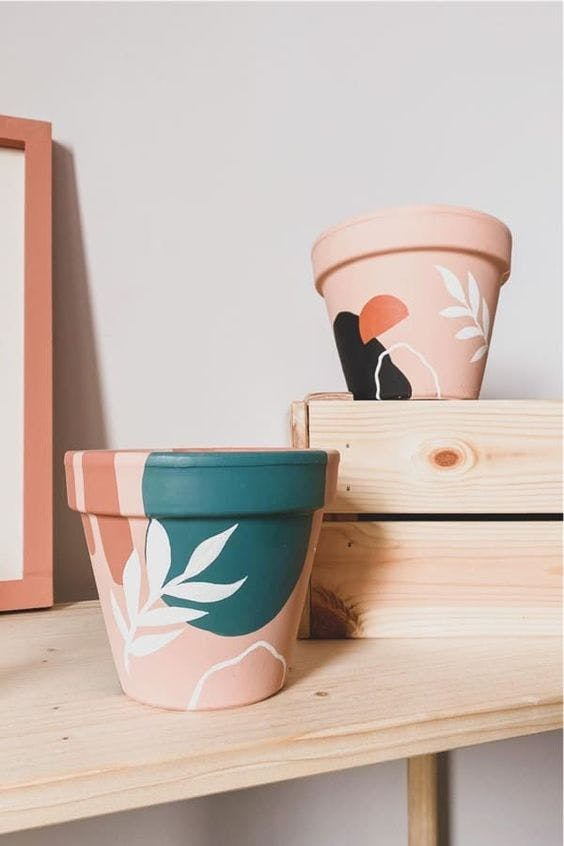

Humans have used vessels for at least 100,000 years, and possibly millions of years. The first containers may have been invented for storing food, allowing early humans to preserve more food for longer, or to carry it more easily, and also to protect it from other animals. The development of food storage containers was of great importance to the evolution of the human population, and was quite an innovative behavior not previously seen in other majors. Perhaps the first containers found in nature were hollow gourds, of which primitive examples have been found in cultures as diverse as those of the Native Hawaiians. This was followed by woven baskets, carved wood, and pottery.